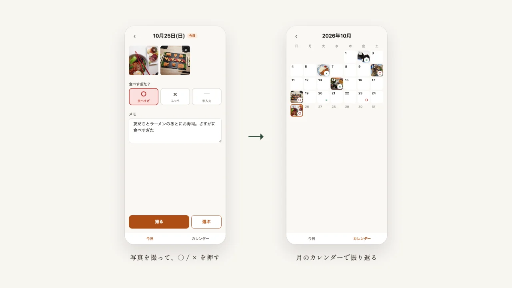
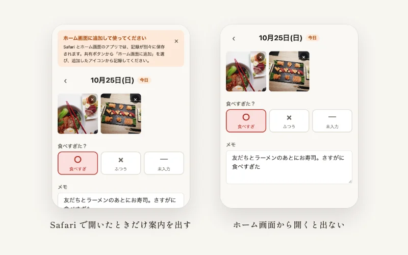

Case Study — Web App
食事日記
食べたものを写真で残し、その日に食べすぎたかを ○ / × で自分で付ける、スマホ向けの日記アプリです。記録はスマホの中にだけ保存し、サーバーには送りません。受注した案件ではなく自分で企画した Web アプリで、ホーム画面に追加してアプリのように使えます。
動いている様子を見る
Problem
課題
カロリーを記録するアプリは、品目や分量を細かく入力する必要があり、続けるのが大変です。一方で、写真を撮るだけでは「食べすぎたかどうか」を振り返れません。
- 細かい入力が面倒で、記録が続かない
- スマホの写真には撮影場所の位置情報が含まれ、そのまま保存するのは気になる
- スマホのブラウザで動かすと、iPhone の Safari 特有の不具合に当たりやすい
Approach
アプローチ
操作は「写真を撮る」と「○ / × を押す」の2つだけにし、メモは任意にしました。メモは入力が止まると自動で保存されるので、保存ボタンはありません。写真は保存する前に縮小し、描き直して JPEG にすることで、位置情報などの付加情報を取り除いています。
iPhone の実機で試しながら、Safari で起きる問題に1つずつ対処しました。入力後にキーボードを閉じると画面がずれたまま戻らない、入力欄に触れると画面が拡大される、Safari とホーム画面のアプリでデータが別々になる、といった問題です。データが別々になる点は、Safari で開いたときだけホーム画面への追加を案内して、記録を始める場所をそろえました。
記録を保存・表示する部分は、食事日記に固有の部分と切り分けました。釣果の記録など別のアプリにも使い回せるうえ、後からクラウド保存に切り替えられる作りです。文字色はすべて、読みやすさの基準（WCAG AA のコントラスト比）を測って決めました。動作は31件の自動テストで確かめ、コードを更新するたびに GitHub で自動実行しています。実装は、AI のコーディング支援（Claude Code）を使って進めました。

Result
成果
公開済みで、iPhone のホーム画面に追加して使えることを実機で確かめました。公開して間もないため、自分以外の利用者はまだいません。今は記録がスマホの中にしかないので、機種を変えるとデータを引き継げません。次は、ログインとクラウド保存を加えて、この点を解消する予定です。
コードと設計の詳しい説明は、GitHub のリポジトリで公開しています。